Shape-Constrained Approximators
Introduction
In ecological and epidemiological modeling, the unknown functions we seek to recover often have known qualitative properties — a transmission rate must be positive and may decrease with prevalence; a per-capita growth rate must pass through zero at carrying capacity; a functional response must be increasing and saturating. Standard unconstrained B-spline approximators can violate these properties, especially at the boundaries of the observed data range or when data are noisy.
Shape-constrained B-spline approximators enforce these properties structurally via the SCOP-spline reparameterization of Pya & Wood (2015). Parameters are stored in unconstrained space (γ) and transformed to knot values via β = Σ · softplus(γ), where the constraint matrix Σ encodes the desired shape. This is transparent to the IRLS/LAML fitting machinery — the finite-difference Jacobian automatically captures the chain rule through the transformation.
This vignette compares unconstrained and shape-constrained fits on five ecological examples, demonstrating improved recovery of the true unknown function.
using PartiallySpecifiedModels
using OrdinaryDiffEq
using Plots
using Random
using Statistics: cor
Random.seed!(42)TaskLocalRNG()Example 1: SIR with Decreasing Transmission Rate
In an SIR model with behavioral feedback, the transmission rate β(I) decreases as the number of infected increases — people take precautions during epidemics. The true function is β(I) = 0.5 · exp(−5 · I/N), which is strictly decreasing, positive, and convex.
Data generation
N_pop = 1000.0
β0, κ = 0.5, 5.0
γ_sir = 0.25
β_true(I) = β0 * exp(-κ * I / N_pop)
function sir_true!(du, u, p, t)
S, I = u
β = β_true(I)
du[1] = -β * S * I / N_pop
du[2] = β * S * I / N_pop - γ_sir * I
end
u0_sir = [N_pop - 1.0, 1.0]
tspan_sir = (0.0, 40.0)
prob_sir_true = ODEProblem(sir_true!, u0_sir, tspan_sir)
sol_sir_true = OrdinaryDiffEq.solve(prob_sir_true, Tsit5(); saveat=0.5)
data_times_sir = sol_sir_true.t
S_obs = [sol_sir_true(t)[1] + 5.0 * randn() for t in data_times_sir]
I_obs = [max(sol_sir_true(t)[2] + 2.0 * randn(), 0.1) for t in data_times_sir]
data_sir = hcat(S_obs, I_obs)81×2 Matrix{Float64}:
1002.94 0.1
994.336 2.51339
994.068 2.51308
994.433 0.815829
994.207 3.15416
996.925 0.802537
992.238 0.770292
999.414 1.01583
1002.83 0.1
993.176 1.91091
⋮
599.213 60.8642
588.03 58.4675
579.614 59.8992
568.735 54.7515
569.007 59.2883
556.072 56.2729
545.86 56.0825
560.876 55.0784
550.109 52.3089Fitting: unconstrained vs decreasing
function sir_psm!(du, u, p, t)
S, I = u
β_val = p.β(max(I, 0.1))
du[1] = -β_val * S * I / p.N
du[2] = β_val * S * I / p.N - p.γ * I
end
I_max = ceil(maximum(I_obs) / 10) * 10 + 10
I_domain = (0.0, I_max)
# Unconstrained B-spline
uf_unc = BSplineApproximator(:β, I_domain, 10; initial=I -> 0.4)
prob_unc = PSMProblem(
ODEProblem(sir_psm!, u0_sir, tspan_sir), [uf_unc];
data_times=data_times_sir, data_values=data_sir,
obs_to_state=[1, 2],
known_params=(γ=γ_sir, N=N_pop),
solver=Tsit5())
sol_unc = solve(prob_unc, LAML(maxiters=60, verbose=false))
# Shape-constrained: decreasing
uf_dec = ShapeConstrainedBSplineApproximator(:β, I_domain, 10, :decreasing;
initial=I -> 0.4)
prob_dec = PSMProblem(
ODEProblem(sir_psm!, u0_sir, tspan_sir), [uf_dec];
data_times=data_times_sir, data_values=data_sir,
obs_to_state=[1, 2],
known_params=(γ=γ_sir, N=N_pop),
solver=Tsit5())
sol_dec = solve(prob_dec, LAML(maxiters=60, verbose=false))
# Shape-constrained: decreasing + positive
uf_dp = ShapeConstrainedBSplineApproximator(:β, I_domain, 10, :dec_positive;
initial=I -> 0.4)
prob_dp = PSMProblem(
ODEProblem(sir_psm!, u0_sir, tspan_sir), [uf_dp];
data_times=data_times_sir, data_values=data_sir,
obs_to_state=[1, 2],
known_params=(γ=γ_sir, N=N_pop),
solver=Tsit5())
sol_dp = solve(prob_dp, LAML(maxiters=60, verbose=false))PSMSolution((β = [-4.412609035867806, -3.952481027200696, -3.3224527399822144, -3.4597698745635217, -3.6151720000137244, -3.811380275055095, -4.324205668409562, -4.372462769659104, -3.6555299279994906, -1.0112626996082728]), 978.2230234828197, 1812.5091425391179, 3.505135130685218, [17.010566301532663], [999.0 1.0; 998.7383319738899 1.1287801216608582; … ; 550.6367708275482 54.509419782499485; 545.0298167013921 53.37364919616881], [1002.9417780080215 0.1; 994.336337127347 2.513393471733556; … ; 560.8762781527898 55.078432240876076; 550.1092310565226 52.30887822952764], [0.0, 0.5, 1.0, 1.5, 2.0, 2.5, 3.0, 3.5, 4.0, 4.5 … 35.5, 36.0, 36.5, 37.0, 37.5, 38.0, 38.5, 39.0, 39.5, 40.0], Dict{Symbol, Any}(:β => PartiallySpecifiedModels.var"#evaluator#build_constrained_bspline_evaluator##0"{Float64, Float64, Float64, Float64, Float64, Float64, Float64, Int64, Vector{Float64}, Vector{Float64}}(0.0, 0.3336014789540171, 0.49414054618416037, -0.0014801318008968046, -0.0012084906559915087, 90.0, 0.0, 4, [-38.57142857142857, -25.714285714285715, -12.857142857142858, 0.0, 12.857142857142858, 25.714285714285715, 38.57142857142857, 51.42857142857143, 64.28571428571429, 77.14285714285714, 90.0, 102.85714285714286, 115.71428571428572, 128.57142857142856], [0.5073535278696581, 0.49530292258499703, 0.47627805889531566, 0.4408488832795321, 0.40989591194705033, 0.3833393829882159, 0.3614628005047383, 0.3483056703000912, 0.33576451851241224, 0.3102451293743627])), (V_beta = [0.09094738016459727 0.033580421689666184 … 0.0005656649796260105 -0.000220728470619555; 0.033580421689666184 0.034953556394960734 … 0.0005613372062385057 -0.00021845023153870756; … ; 0.0005656649796260105 0.0005613372062385057 … 0.035532664734332836 -0.00457551304658938; -0.000220728470619555 -0.00021845023153870756 … -0.00457551304658938 0.0007521578545415151], sigma2 = 11.435759411092608, converged = false, iterations = 60, reason = :maxiters, laml_failures = 0, criterion = :working, laml = -215.4895902953216, stationarity = 1.0377031382884472, smoothing_advanced = true, smoothing_fixed = false, solver = :LAML, smoothing_state = (beta = [-4.412609035867806, -3.952481027200696, -3.3224527399822144, -3.4597698745635217, -3.6151720000137244, -3.811380275055095, -4.324205668409562, -4.372462769659104, -3.6555299279994906, -1.0112626996082728], lambda = [17.010566301532663], penalties = [[1.0 -1.0 … 0.0 0.0; -1.0 2.0 … 0.0 0.0; … ; 0.0 0.0 … 2.0 -1.0; 0.0 0.0 … -1.0 1.0]], offsets = [0], sizes = [10], ranks = [9], information = [14.689061986899796 235.58305003471597 … 1330.5587939213183 14084.848912751282; 235.58305003471597 3780.243574984296 … 21489.95044399917 227485.34852495737; … ; 1330.5587939213183 21489.95044399917 … 141653.78829729676 1.4994922307816653e6; 14084.848912751282 227485.34852495737 … 1.4994922307816653e6 1.587304496295842e7], rss = 1812.5091425391179, residual_dof = 161, covariance_ridge = 1.587306197452472e-5, coefficient_score = [-7.156710243627944, 5.9602374322347895, 42.643475484613504, 33.52627964724016, 32.10967929188981, 17.349860573534986, 8.005053797936348, 10.940599586931127, 16.02430821560963, 561.8995196814614], names = (:β,), data_weights = [1.0 1.0; 1.0 1.0; … ; 1.0 1.0; 1.0 1.0], jac = :fd)))Results
I_eval = range(0.01, I_max * 0.9, length=200)
β_truth = [β_true(I) for I in I_eval]
β_unc = [sol_unc.unknown_functions[:β](I) for I in I_eval]
β_dec_ = [sol_dec.unknown_functions[:β](I) for I in I_eval]
β_dp_ = [sol_dp.unknown_functions[:β](I) for I in I_eval]
r_unc = round(cor(β_truth, β_unc), digits=3)
r_dec = round(cor(β_truth, β_dec_), digits=3)
r_dp = round(cor(β_truth, β_dp_), digits=3)
p1 = plot(I_eval, β_truth, label="True β(I)", lw=3, color=:black, ls=:dash,
xlabel="Infected (I)", ylabel="β(I)", title="Recovered Transmission Rate")
plot!(p1, I_eval, β_unc, label="Unconstrained (r=$r_unc)", lw=2, color=:blue)
plot!(p1, I_eval, β_dec_, label="Decreasing (r=$r_dec)", lw=2, color=:red)
plot!(p1, I_eval, β_dp_, label="Dec+Positive (r=$r_dp)", lw=2, color=:green)
hline!(p1, [0.0], color=:gray, ls=:dot, alpha=0.5, label="")
p1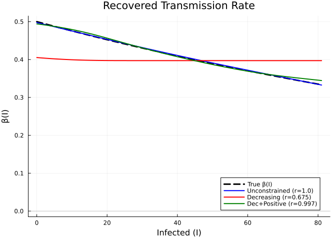
SIR Transmission Rate β(I)
────────────────────────────────────────────────────────────
Unconstrained: data_loss=1814.0, EDF=2.6, cor=1.0
Decreasing: data_loss=678100.0, EDF=2.2, cor=0.675
Dec+Positive: data_loss=1813.0, EDF=3.5, cor=0.997The :decreasing constraint prevents the spurious upticks that unconstrained splines can produce at the boundaries, while :dec_positive additionally ensures β never goes negative — a physical requirement for a transmission rate.
Example 2: Logistic Growth with Zero at Carrying Capacity
The per-capita growth rate in a logistic model, r(N) = r₀(1 − N/K), is linear, decreasing, and passes through zero at carrying capacity K. The :dec_zero_right constraint enforces both monotonic decrease and f(x_max) = 0, which is ideal when the upper domain bound corresponds to equilibrium.
Data generation
r0_log, K_log = 0.5, 10.0
function logistic_true!(du, u, p, t)
N = u[1]
du[1] = r0_log * (1 - N / K_log) * N
end
u0_log = [0.5]
tspan_log = (0.0, 15.0)
data_times_log = collect(0.0:0.5:15.0)
prob_log_true = ODEProblem(logistic_true!, u0_log, tspan_log)
sol_log_true = OrdinaryDiffEq.solve(prob_log_true, Tsit5(); saveat=data_times_log)
N_true_log = [sol_log_true(t)[1] for t in data_times_log]
N_obs_log = max.(N_true_log .+ 0.3 .* randn(length(data_times_log)), 0.01)31-element Vector{Float64}:
0.5638496831253851
0.47858794807053706
0.23783381465094044
1.100948638215157
1.2194094374867694
1.3285619180292778
1.7184617685751018
2.4876414139320002
2.684317355189259
3.469039475341371
⋮
9.91225482486327
8.940812586886324
10.036704141925355
9.266096785193076
9.42691975394481
10.088927552672022
10.179451893270052
9.665462672589227
9.449517773113408Fitting: unconstrained vs deczeroright
function growth_psm!(du, u, p, t)
N = u[1]
du[1] = p.r(max(N, 0.01)) * N
end
N_domain = (0.0, K_log) # domain upper bound = carrying capacity
# Unconstrained
uf_log_unc = BSplineApproximator(:r, N_domain, 8; initial=x -> 0.3)
prob_log_unc = PSMProblem(
ODEProblem(growth_psm!, u0_log, tspan_log), [uf_log_unc];
data_times=data_times_log, data_values=reshape(N_obs_log, :, 1),
solver=Tsit5())
sol_log_unc = solve(prob_log_unc, LAML(maxiters=80, verbose=false))
# Decreasing
uf_log_dec = ShapeConstrainedBSplineApproximator(:r, N_domain, 8, :decreasing;
initial=x -> 0.3)
prob_log_dec = PSMProblem(
ODEProblem(growth_psm!, u0_log, tspan_log), [uf_log_dec];
data_times=data_times_log, data_values=reshape(N_obs_log, :, 1),
solver=Tsit5())
sol_log_dec = solve(prob_log_dec, LAML(maxiters=80, verbose=false))
# Decreasing + zero at right endpoint
uf_log_dzr = ShapeConstrainedBSplineApproximator(:r, N_domain, 8, :dec_zero_right;
initial=x -> r0_log * (1 - x / K_log))
prob_log_dzr = PSMProblem(
ODEProblem(growth_psm!, u0_log, tspan_log), [uf_log_dzr];
data_times=data_times_log, data_values=reshape(N_obs_log, :, 1),
solver=Tsit5())
sol_log_dzr = solve(prob_log_dzr, LAML(maxiters=80, verbose=false))PSMSolution((r = [-2.252072974012867, -2.2520729740131165, -2.252072974100159, -2.2520729746495136, -2.252072975830519, -2.252072976953113, -2.252072977191387]), 1.357246446047659, 2.7144932962881887, 0.9999913254502514, [3.7295240862696743e8], [0.5; 0.6330364481991119; … ; 9.866949836465723; 9.896076904706861;;], [0.5638496831253851; 0.47858794807053706; … ; 9.665462672589227; 9.449517773113408;;], [0.0, 0.5, 1.0, 1.5, 2.0, 2.5, 3.0, 3.5, 4.0, 4.5 … 10.5, 11.0, 11.5, 12.0, 12.5, 13.0, 13.5, 14.0, 14.5, 15.0], Dict{Symbol, Any}(:r => PartiallySpecifiedModels.var"#evaluator#build_constrained_bspline_evaluator##0"{Float64, Float64, Float64, Float64, Float64, Float64, Float64, Int64, Vector{Float64}, Vector{Float64}}(0.10000908688627312, 0.10000908688627312, 0.6000545222857429, -0.050004543420602086, -0.05000454349399249, 10.0, 0.0, 4, [-6.0, -4.0, -2.0, 0.0, 2.0, 4.0, 6.0, 8.0, 10.0, 12.0, 14.0, 16.0], [0.700063609470735, 0.600054522285739, 0.5000454351007667, 0.4000363479240784, 0.3000272607996726, 0.20001817378766407, 0.10000908688249367, 0.0])), (V_beta = [0.001666680235246579 0.0016666775605659483 … 0.0016666703679267766 0.0016666702105347664; 0.0016666775605659483 0.0016666775671925753 … 0.001666670374553403 0.0016666702171613925; … ; 0.0016666703679267766 0.001666670374553403 … 0.0016666739071430374 0.0016666737497510074; 0.0016666702105347664 0.0016666702171613925 … 0.0016666737497510074 0.001666676273666233], sigma2 = 0.09048308371293926, converged = true, iterations = 11, reason = :converged_tol, laml_failures = 0, criterion = :working, laml = 33.81294468939517, stationarity = 2.7440609784434855e-9, smoothing_advanced = true, smoothing_fixed = false, solver = :LAML, smoothing_state = (beta = [-2.252072974012867, -2.2520729740131165, -2.252072974100159, -2.2520729746495136, -2.252072975830519, -2.252072976953113, -2.252072977191387], lambda = [3.7295240862696743e8], penalties = [[1.0 -1.0 … 0.0 0.0; -1.0 2.0 … 0.0 0.0; … ; 0.0 0.0 … 2.0 -1.0; 0.0 0.0 … -1.0 1.0]], offsets = [0], sizes = [7], ranks = [6], information = [0.00410840936286217 0.08342964946145076 … 0.37634158145390756 0.07936331074095047; 0.08342964946145076 1.7010395856654004 … 7.750568309017591 1.6349226961694026; … ; 0.37634158145390756 7.750568309017591 … 46.12145444577603 10.28272225458772; 0.07936331074095047 1.6349226961694026 … 10.28272225458772 2.369617877912761], rss = 2.7144932962881887, residual_dof = 30, covariance_ridge = 0.0007459048633763893, coefficient_score = [2.7323139502037657e-6, 0.0001892338538842589, 0.0009592659573889883, 0.0014081634560425826, 0.0002490789448404383, -0.0014470140739435977, -0.00041005003780276994], names = (:r,), data_weights = [1.0; 1.0; … ; 1.0; 1.0;;], jac = :fd)))Results
N_grid = range(0.1, K_log - 0.1, length=200)
r_truth = [r0_log * (1 - N / K_log) for N in N_grid]
r_unc_ = [sol_log_unc.unknown_functions[:r](N) for N in N_grid]
r_dec_ = [sol_log_dec.unknown_functions[:r](N) for N in N_grid]
r_dzr_ = [sol_log_dzr.unknown_functions[:r](N) for N in N_grid]
cr_unc = round(cor(r_truth, r_unc_), digits=3)
cr_dec = round(cor(r_truth, r_dec_), digits=3)
cr_dzr = round(cor(r_truth, r_dzr_), digits=3)
p2 = plot(N_grid, r_truth, label="True r(N)", lw=3, color=:black, ls=:dash,
xlabel="Population (N)", ylabel="r(N)", title="Per-Capita Growth Rate")
plot!(p2, N_grid, r_unc_, label="Unconstrained (r=$cr_unc)", lw=2, color=:blue)
plot!(p2, N_grid, r_dec_, label="Decreasing (r=$cr_dec)", lw=2, color=:red)
plot!(p2, N_grid, r_dzr_, label="Dec+Zero@K (r=$cr_dzr)", lw=2, color=:green)
hline!(p2, [0.0], color=:gray, ls=:dot, alpha=0.5, label="")
vline!(p2, [K_log], color=:gray, ls=:dot, alpha=0.5, label="K=$K_log")
p2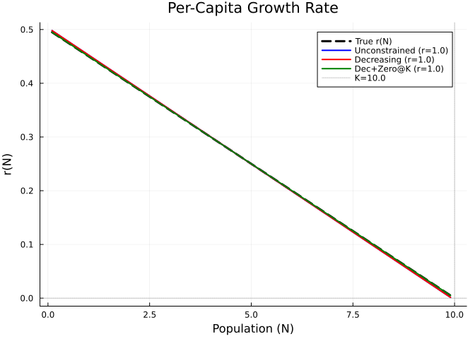
Logistic Per-Capita Growth Rate r(N)
────────────────────────────────────────────────────────────
Unconstrained: data_loss=2.679, EDF=2.0, cor=1.0
Decreasing: data_loss=2.679, EDF=2.0, cor=1.0
Dec+Zero@K: data_loss=2.714, EDF=1.0, cor=1.0The :dec_zero_right constraint pins the growth rate to zero at K, preventing the overshoot or undershoot that unconstrained splines produce near equilibrium.
Example 3: Consumer-Resource with Saturating Functional Response
The Holling Type II functional response f(R) = v·R/(K_m + R) is increasing, concave, and satisfies f(0) = 0. The :inc_concave constraint enforces the saturating shape, while :inc_zero_left additionally pins f(0) = 0.
Data generation
v_max, K_m = 2.0, 5.0
f_true(R) = v_max * R / (K_m + R)
function cr_true!(du, u, p, t)
R, C = u
f = f_true(max(R, 0.01))
du[1] = 0.5 * (20.0 - R) - f * C
du[2] = 0.4 * f * C - 0.3 * C
end
u0_cr = [20.0, 2.0]
tspan_cr = (0.0, 30.0)
prob_cr_true = ODEProblem(cr_true!, u0_cr, tspan_cr)
sol_cr_true = OrdinaryDiffEq.solve(prob_cr_true, Tsit5(); saveat=0.5)
data_times_cr = sol_cr_true.t
data_cr = max.(hcat(
[sol_cr_true(t)[1] + 0.5 * randn() for t in data_times_cr],
[sol_cr_true(t)[2] + 0.3 * randn() for t in data_times_cr]
), 0.01)61×2 Matrix{Float64}:
19.2213 1.57724
18.4594 2.07267
17.2397 2.89852
16.7196 3.3431
15.0333 3.92124
12.444 4.48924
11.6579 4.92027
9.79749 5.22939
9.00779 6.64211
7.10691 7.19822
⋮
3.1999 11.5365
2.98514 11.3669
3.14408 10.6392
3.24173 11.1148
2.82917 11.4817
3.10327 11.954
3.46299 11.0671
3.43849 11.221
3.27174 11.3576Fitting: unconstrained vs incconcave vs inczero_left
function cr_psm!(du, u, p, t)
R, C = u
fR = p.f(max(R, 0.01))
du[1] = p.a * (p.R0 - R) - max(fR, 0.0) * C
du[2] = p.ε * max(fR, 0.0) * C - p.d * C
end
R_domain = (0.0, 22.0)
kp_cr = (a=0.5, R0=20.0, ε=0.4, d=0.3)
# Unconstrained
uf_cr_unc = BSplineApproximator(:f, R_domain, 8;
initial=R -> v_max * R / (K_m + R + 1.0))
prob_cr_unc = PSMProblem(
ODEProblem(cr_psm!, u0_cr, tspan_cr), [uf_cr_unc];
data_times=data_times_cr, data_values=data_cr,
obs_to_state=[1, 2], known_params=kp_cr, solver=Tsit5())
sol_cr_unc = solve(prob_cr_unc, LAML(maxiters=200, verbose=false))
# Increasing + concave (needs more knots to express curvature within the constraint)
uf_cr_ic = ShapeConstrainedBSplineApproximator(:f, R_domain, 15, :inc_concave;
initial=0.5)
prob_cr_ic = PSMProblem(
ODEProblem(cr_psm!, u0_cr, tspan_cr), [uf_cr_ic];
data_times=data_times_cr, data_values=data_cr,
obs_to_state=[1, 2], known_params=kp_cr, solver=Tsit5())
sol_cr_ic = solve(prob_cr_ic, LAML(maxiters=200, verbose=false))
# Increasing + zero at left
uf_cr_izl = ShapeConstrainedBSplineApproximator(:f, R_domain, 8, :inc_zero_left;
initial=0.5)
prob_cr_izl = PSMProblem(
ODEProblem(cr_psm!, u0_cr, tspan_cr), [uf_cr_izl];
data_times=data_times_cr, data_values=data_cr,
obs_to_state=[1, 2], known_params=kp_cr, solver=Tsit5())
sol_cr_izl = solve(prob_cr_izl, LAML(maxiters=200, verbose=false))PSMSolution((f = [1.8507719948910213, 0.26307806239444853, -0.9327743779347253, -2.003282107059797, -3.1345203325831603, -3.4000414266359353, -3.404142231889835]), 9.664264477690507, 18.937933114049944, 3.444663990621304, [0.060585297595503955], [20.0 2.0; 18.5190860093535 2.342340880591057; … ; 3.120191259068305 11.249974688744972; 3.1200088660506387 11.250501265505337], [19.221271868199455 1.5772370439612902; 18.459418632496387 2.0726733314984185; … ; 3.4384946855735006 11.220979157472902; 3.2717431639901524 11.357557961582005], [0.0, 0.5, 1.0, 1.5, 2.0, 2.5, 3.0, 3.5, 4.0, 4.5 … 25.5, 26.0, 26.5, 27.0, 27.5, 28.0, 28.5, 29.0, 29.5, 30.0], Dict{Symbol, Any}(:f => PartiallySpecifiedModels.var"#evaluator#build_constrained_bspline_evaluator##0"{Float64, Float64, Float64, Float64, Float64, Float64, Float64, Int64, Vector{Float64}, Vector{Float64}}(1.802804229209929, 3.363748123329189, 1.802804229209929, 0.007445692378360091, 0.321592568615908, 22.0, 0.0, 4, [-13.200000000000001, -8.8, -4.4, 0.0, 4.4, 8.8, 13.2, 17.6, 22.0, 26.4, 30.8, 35.2], [0.0, 1.9967025477438665, 2.8300151842841084, 3.161805467887306, 3.288342807214717, 3.3309430190479414, 3.363770151607165, 3.396465114498531])), (V_beta = [2.0053873307187566 -1.029014455713049 … -0.6083584940592717 -0.6077218936190268; -1.029014455713049 0.5365190509296177 … 0.33300509457828237 0.33257534256612925; … ; -0.6083584940592717 0.33300509457828237 … 23.620000157521474 23.599914718646964; -0.6077218936190268 0.33257534256612925 … 23.599914718646964 40.08542655291372], sigma2 = 0.15973918805773363, converged = true, iterations = 35, reason = :converged_tol, laml_failures = 0, criterion = :working, laml = 103.00288702149041, stationarity = 8.824613336851546e-5, smoothing_advanced = true, smoothing_fixed = false, solver = :LAML, smoothing_state = (beta = [1.8507719948910213, 0.26307806239444853, -0.9327743779347253, -2.003282107059797, -3.1345203325831603, -3.4000414266359353, -3.404142231889835], lambda = [0.060585297595503955], penalties = [[1.0 -1.0 … 0.0 0.0; -1.0 2.0 … 0.0 0.0; … ; 0.0 0.0 … 2.0 -1.0; 0.0 0.0 … -1.0 1.0]], offsets = [0], sizes = [7], ranks = [6], information = [106.063861889008 284.7808432393363 … 0.8567819630819657 0.01330080999216837; 284.7808432393363 797.926435775882 … 2.7293487743966423 0.04236230701182001; … ; 0.8567819630819657 2.7293487743966423 … 0.015247045566640194 0.00023892456957051435; 0.01330080999216837 0.04236230701182001 … 0.00023892456957051435 3.771163216787969e-6], rss = 18.937933114049944, residual_dof = 121, covariance_ridge = 7.98048606371073e-10, coefficient_score = [9.651224710761908e-5, 8.542123605446636e-5, 6.770227965776157e-6, 2.7274457820281126e-5, 4.2148024517463245e-5, -5.085132163109782e-5, 4.052016401448824e-9], names = (:f,), data_weights = [1.0 1.0; 1.0 1.0; … ; 1.0 1.0; 1.0 1.0], jac = :fd)))Results
R_eval = range(0.01, 21.0, length=200)
f_truth = [f_true(R) for R in R_eval]
f_unc_ = [sol_cr_unc.unknown_functions[:f](R) for R in R_eval]
f_ic_ = [sol_cr_ic.unknown_functions[:f](R) for R in R_eval]
f_izl_ = [sol_cr_izl.unknown_functions[:f](R) for R in R_eval]
cf_unc = round(cor(f_truth, f_unc_), digits=3)
cf_ic = round(cor(f_truth, f_ic_), digits=3)
cf_izl = round(cor(f_truth, f_izl_), digits=3)
p3 = plot(R_eval, f_truth, label="True f(R)", lw=3, color=:black, ls=:dash,
xlabel="Resource (R)", ylabel="f(R)", title="Functional Response (Holling Type II)")
plot!(p3, R_eval, f_unc_, label="Unconstrained (r=$cf_unc)", lw=2, color=:blue)
plot!(p3, R_eval, f_ic_, label="Inc+Concave (r=$cf_ic)", lw=2, color=:red)
plot!(p3, R_eval, f_izl_, label="Inc+Zero@0 (r=$cf_izl)", lw=2, color=:green)
hline!(p3, [v_max], ls=:dot, color=:gray, alpha=0.5, label="Asymptote v=$v_max")
p3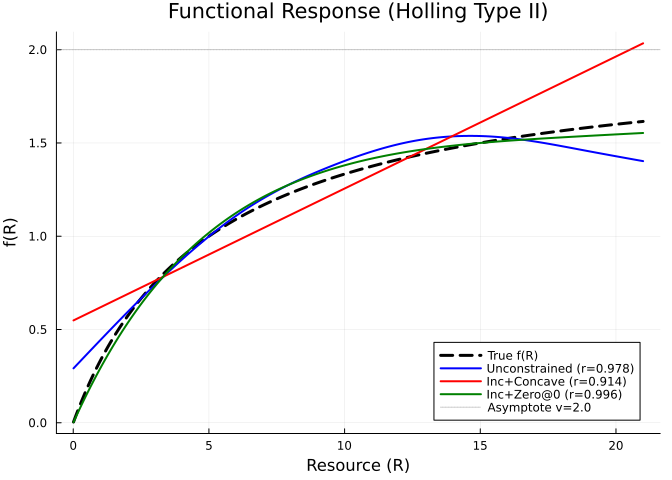
Functional Response f(R) — Holling Type II
────────────────────────────────────────────────────────────
Unconstrained: data_loss=18.69, EDF=4.1, cor=0.978
Inc+Concave: data_loss=38.93, EDF=2.0, cor=0.914
Inc+Zero@0: data_loss=18.94, EDF=3.4, cor=0.996The :inc_concave constraint prevents the spline from oscillating or producing a non-monotone response, while :inc_zero_left additionally pins f(0) = 0, which is the correct biological boundary condition — no consumption when prey are absent.
[!NOTE]
Knot count for compound constraints
The
:inc_concaveconstraint requires more knots than:inc_zero_leftto express curvature. With compound constraints (increasing AND concave), each constraint removes degrees of freedom from the spline, so more knots are needed to retain enough flexibility. Here we use 15 knots forinc_concavevs 8 forinc_zero_left.
Example 4: Ricker Model (Discrete Time)
The Ricker model N_{t+1} = N_t · exp(f(N_t)) has f(N) = r(1 − N/K), which is linear, decreasing, and passes through zero at carrying capacity K. The :dec_zero_right constraint enforces the equilibrium condition f(K) = 0.
Data generation
true_r_rick = 0.8
true_K_rick = 100.0
true_f_rick(N) = true_r_rick * (1.0 - N / true_K_rick)
N0_rick = [10.0]
tspan_rick = (0.0, 40.0)
times_rick = collect(0.0:1.0:tspan_rick[2])
n_steps_rick = Int(tspan_rick[2])
N_true_rick = zeros(length(times_rick))
N_true_rick[1] = N0_rick[1]
u_r = copy(N0_rick)
u_next_r = similar(u_r)
for i in 1:n_steps_rick
u_next_r[1] = u_r[1] * exp(true_r_rick * (1.0 - u_r[1] / true_K_rick))
u_r .= u_next_r
N_true_rick[i+1] = u_r[1]
end
N_obs_rick = max.(N_true_rick .+ 3.0 .* randn(length(times_rick)), 0.1)41-element Vector{Float64}:
5.942096221475496
14.97355166298604
36.47669410763192
64.98382847767623
84.9889555467434
93.01653698141946
98.35159295109142
97.00839374805695
101.2665869503188
98.96552701540112
⋮
101.6101611621193
101.1547236496783
102.1938087722043
95.10592316552207
96.88526366718008
92.57510507845049
103.53641890338893
98.27564395497348
99.06578666904493Fitting: unconstrained vs deczeroright
function ricker_psm!(u_next, u, p, t)
N = u[1]
f_N = p.f(max(N, 0.1))
u_next[1] = N * exp(f_N)
end
# Domain: 0 to K (true carrying capacity)
N_domain_rick = (0.0, true_K_rick)
# Unconstrained
uf_rick_unc = BSplineApproximator(:f, N_domain_rick, 10;
initial=x -> 0.5 * (1.0 - x / 100.0))
prob_rick_unc = PSMProblem(
DiscreteProblem(ricker_psm!, N0_rick, tspan_rick), [uf_rick_unc];
data_times=times_rick, data_values=reshape(N_obs_rick, :, 1))
sol_rick_unc = solve(prob_rick_unc, LAML(maxiters=80, verbose=false))
# Decreasing
uf_rick_dec = ShapeConstrainedBSplineApproximator(:f, N_domain_rick, 10, :decreasing;
initial=x -> 0.5 * (1.0 - x / 100.0))
prob_rick_dec = PSMProblem(
DiscreteProblem(ricker_psm!, N0_rick, tspan_rick), [uf_rick_dec];
data_times=times_rick, data_values=reshape(N_obs_rick, :, 1))
sol_rick_dec = solve(prob_rick_dec, LAML(maxiters=80, verbose=false))
# Decreasing + zero at K
uf_rick_dzr = ShapeConstrainedBSplineApproximator(:f, N_domain_rick, 10, :dec_zero_right;
initial=x -> true_r_rick * (1.0 - x / true_K_rick))
prob_rick_dzr = PSMProblem(
DiscreteProblem(ricker_psm!, N0_rick, tspan_rick), [uf_rick_dzr];
data_times=times_rick, data_values=reshape(N_obs_rick, :, 1))
sol_rick_dzr = solve(prob_rick_dzr, LAML(maxiters=80, verbose=false))PSMSolution((f = [-2.121909727297724, -2.1219097272967473, -2.121909727222294, -2.121909726999643, -2.1219097268078775, -2.1219097268885028, -2.1219097272503396, -2.1219097277256376, -2.1219097278505883]), 175.76510699815563, 351.5302569862138, 0.9999562527548451, [3.9778056278852806e10], [10.0; 20.398175239208875; … ; 100.0; 100.0;;], [5.942096221475496; 14.97355166298604; … ; 98.27564395497348; 99.06578666904493;;], [0.0, 1.0, 2.0, 3.0, 4.0, 5.0, 6.0, 7.0, 8.0, 9.0 … 31.0, 32.0, 33.0, 34.0, 35.0, 36.0, 37.0, 38.0, 39.0, 40.0], Dict{Symbol, Any}(:f => PartiallySpecifiedModels.var"#evaluator#build_constrained_bspline_evaluator##0"{Float64, Float64, Float64, Float64, Float64, Float64, Float64, Int64, Vector{Float64}, Vector{Float64}}(0.11315243719770608, 0.11315243719770608, 0.9052194980733873, -0.007920670608777904, -0.007920670600199872, 100.0, 0.0, 4, [-42.85714285714286, -28.571428571428573, -14.285714285714286, 0.0, 14.285714285714286, 28.571428571428573, 42.857142857142854, 57.142857142857146, 71.42857142857143, 85.71428571428571, 100.0, 114.28571428571429, 128.57142857142858, 142.85714285714286], [1.0183719353280314, 0.9052194980734048, 0.7920670608186737, 0.6789146235559773, 0.5657621862694604, 0.45260974896242734, 0.33945731166402016, 0.22630487440432412, 0.1131524371954781, 0.0])), (V_beta = [6.111279583292204e-5 6.111277069869541e-5 … 6.111266997088975e-5 6.11126689530532e-5; 6.111277069869541e-5 6.111277070395756e-5 … 6.11126699761519e-5 6.111266895831536e-5; … ; 6.111266997088975e-5 6.11126699761519e-5 … 6.111272008527776e-5 6.111271906744116e-5; 6.11126689530532e-5 6.111266895831536e-5 … 6.111271906744116e-5 6.111274318909335e-5], sigma2 = 8.788246813115649, converged = true, iterations = 29, reason = :converged_tol, laml_failures = 0, criterion = :working, laml = -47.22326871199439, stationarity = 1.696520368632548e-9, smoothing_advanced = true, smoothing_fixed = false, solver = :LAML, smoothing_state = (beta = [-2.121909727297724, -2.1219097272967473, -2.121909727222294, -2.121909726999643, -2.1219097268078775, -2.1219097268885028, -2.1219097272503396, -2.1219097277256376, -2.1219097278505883], lambda = [3.9778056278852806e10], penalties = [[1.0 -1.0 … 0.0 0.0; -1.0 2.0 … 0.0 0.0; … ; 0.0 0.0 … 2.0 -1.0; 0.0 0.0 … -1.0 1.0]], offsets = [0], sizes = [9], ranks = [8], information = [0.0008085603324611519 0.0692583250406611 … 0.5983112130792707 0.12183350159583135; 0.0692583250406611 5.938228067543391 … 51.6917723790244 10.526479072030375; … ; 0.5983112130792707 51.6917723790244 … 678.4890208188455 144.43050177251973; 0.12183350159583135 10.526479072030375 … 144.43050177251973 31.657862976982052], rss = 351.5302569862138, residual_dof = 40, covariance_ridge = 0.07955611332308232, coefficient_score = [-0.00018538219049513138, -0.013842351177768109, -0.02810762357096941, 0.005314329197650736, 0.0561574810715193, 0.06167388483854985, 0.038845403968990944, -0.049402971940152085, -0.020994984962212193], names = (:f,), data_weights = [1.0; 1.0; … ; 1.0; 1.0;;], jac = :fd)))Results
N_grid_rick = range(0.1, true_K_rick - 0.1, length=200)
f_truth_rick = [true_f_rick(N) for N in N_grid_rick]
f_unc_rick = [sol_rick_unc.unknown_functions[:f](N) for N in N_grid_rick]
f_dec_rick = [sol_rick_dec.unknown_functions[:f](N) for N in N_grid_rick]
f_dzr_rick = [sol_rick_dzr.unknown_functions[:f](N) for N in N_grid_rick]
cr_unc_r = round(cor(f_truth_rick, f_unc_rick), digits=3)
cr_dec_r = round(cor(f_truth_rick, f_dec_rick), digits=3)
cr_dzr_r = round(cor(f_truth_rick, f_dzr_rick), digits=3)
p4a = plot(N_grid_rick, f_truth_rick, label="True f(N)", lw=3, color=:black, ls=:dash,
xlabel="Population (N)", ylabel="f(N)", title="Ricker Growth Exponent")
plot!(p4a, N_grid_rick, f_unc_rick, label="Unconstrained (r=$cr_unc_r)", lw=2, color=:blue)
plot!(p4a, N_grid_rick, f_dec_rick, label="Decreasing (r=$cr_dec_r)", lw=2, color=:red)
plot!(p4a, N_grid_rick, f_dzr_rick, label="Dec+Zero@K (r=$cr_dzr_r)", lw=2, color=:green)
hline!(p4a, [0.0], color=:gray, ls=:dot, alpha=0.5, label="")
vline!(p4a, [true_K_rick], color=:gray, ls=:dot, alpha=0.5, label="K=$true_K_rick")
p4a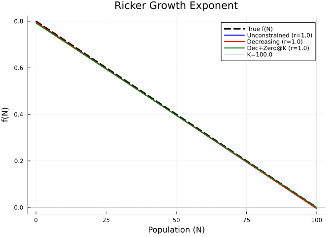
# Fitted trajectories
p4b = plot(times_rick, N_true_rick, label="True", lw=2, color=:black, ls=:dash,
xlabel="Time", ylabel="N(t)", title="Ricker Population Trajectory")
scatter!(p4b, times_rick, N_obs_rick, label="Data", ms=3, color=:gray, alpha=0.5)
plot!(p4b, times_rick, sol_rick_unc.fitted_values[:, 1],
label="Unconstrained", lw=2, color=:blue)
plot!(p4b, times_rick, sol_rick_dzr.fitted_values[:, 1],
label="Dec+Zero@K", lw=2, color=:green)
p4b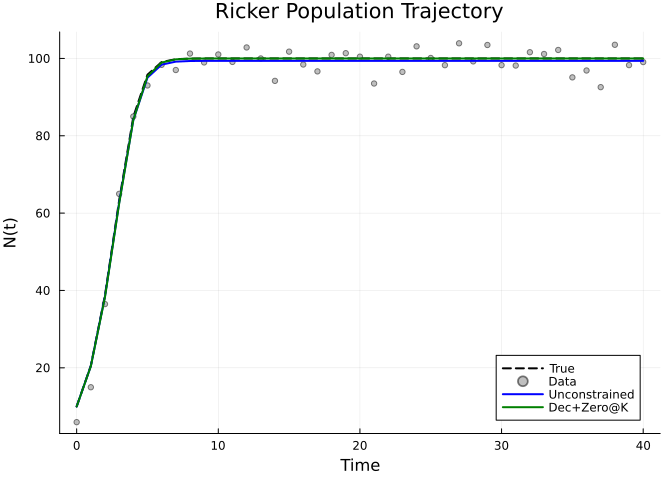
Ricker Growth Exponent f(N)
────────────────────────────────────────────────────────────
Unconstrained: data_loss=338.0, EDF=2.0, cor=1.0
Decreasing: data_loss=338.0, EDF=2.0, cor=1.0
Dec+Zero@K: data_loss=351.5, EDF=1.0, cor=1.0Example 5: Rosenzweig-MacArthur — Simulated Data
In predator-prey models, the key unknowns are typically the functional response f(H) (per-capita predation rate) and numerical response g(H) (predator growth from prey consumption). Given a Rosenzweig-MacArthur model:
\[\frac{dH}{dt} = r \left(1 - \frac{H}{K}\right) H - f(H) \cdot L, \qquad \frac{dL}{dt} = g(H) \cdot L - d \cdot L\]
where the prey growth rate r, carrying capacity K, and predator death rate d are known from independent data (e.g., mark-recapture, life tables), we estimate f(H) and g(H) nonparametrically. Both functions should be increasing in prey density — an ecological constraint that substantially improves identifiability.
Data generation
# True model: Holling Type II functional and numerical responses
f_true_lv(H) = 0.8 * H / (50.0 + H)
g_true_lv(H) = 0.4 * H / (50.0 + H)
r_lv = 0.5; K_lv = 200.0; d_lv = 0.2
function lv_true!(du, u, p, t)
H, L = u
du[1] = r_lv * (1.0 - H / K_lv) * H - f_true_lv(H) * L
du[2] = g_true_lv(H) * L - d_lv * L
end
u0_lv = [80.0, 20.0]
tspan_lv = (0.0, 60.0)
prob_lv_true = ODEProblem(lv_true!, u0_lv, tspan_lv)
sol_lv_true = OrdinaryDiffEq.solve(prob_lv_true, Tsit5(); saveat=0.5)
data_times_lv = sol_lv_true.t
H_obs = max.([sol_lv_true(t)[1] + 3.0 * randn() for t in data_times_lv], 0.1)
L_obs = max.([sol_lv_true(t)[2] + 1.5 * randn() for t in data_times_lv], 0.1)
data_lv = hcat(H_obs, L_obs)
nothingFitting with increasing constraint
function lv_psm!(du, u, p, t)
H, L = u
H_safe = max(H, 0.1)
du[1] = p.r_known * (1.0 - H / p.K_known) * H - p.f(H_safe) * L
du[2] = p.g(H_safe) * L - p.d_known * L
end
H_domain = (0.0, ceil(maximum(H_obs) / 10) * 10 + 10)
kp_lv = (r_known=r_lv, K_known=K_lv, d_known=d_lv)
init_f = H -> 0.5 * H / (50.0 + H)
init_g = H -> 0.3 * H / (50.0 + H)
# Shape-constrained: increasing
uf_f_sc = ShapeConstrainedBSplineApproximator(:f, H_domain, 8, :increasing;
initial=init_f)
uf_g_sc = ShapeConstrainedBSplineApproximator(:g, H_domain, 8, :increasing;
initial=init_g)
prob_lv_sc = PSMProblem(
ODEProblem(lv_psm!, u0_lv, tspan_lv),
[uf_f_sc, uf_g_sc];
data_times=data_times_lv, data_values=data_lv,
obs_to_state=[1, 2], known_params=kp_lv, solver=Tsit5())
sol_lv_sc = solve(prob_lv_sc, LAML(maxiters=80, verbose=false))PSMSolution((f = [-0.7024803765638981, 0.19786721235251692, -1.2017235561206163, -2.068009066865066, -2.599974380824125, -2.8751441515079184, -3.4246311590874665, -3.5585094421848393], g = [-0.3714748621269321, -0.6539505497304089, -1.988750947198692, -2.6436162068079865, -3.4084084664005845, -4.032846796619253, -3.543225388810917, -3.5024764299237736]), 675.8953220512918, 1293.9531070994672, 9.579335948272286, [8.195070164967238, 8.77613282772524], [80.0 20.0; 87.1241662587325 20.5333368867423; … ; 52.231901129583264 79.4353230832328; 45.84394571126792 79.33243451553065], [86.91701002644749 22.29179500375811; 80.10906117684645 20.925384300978628; … ; 52.945855447857696 78.68994491127076; 46.23037197011883 77.69715583936244], [0.0, 0.5, 1.0, 1.5, 2.0, 2.5, 3.0, 3.5, 4.0, 4.5 … 55.5, 56.0, 56.5, 57.0, 57.5, 58.0, 58.5, 59.0, 59.5, 60.0], Dict{Symbol, Any}(:f => PartiallySpecifiedModels.var"#evaluator#build_constrained_bspline_evaluator##0"{Float64, Float64, Float64, Float64, Float64, Float64, Float64, Int64, Vector{Float64}, Vector{Float64}}(0.0, 0.6343334121938434, 0.005472546274061649, 0.0008350777917482845, 0.014720142458670262, 180.0, 0.0, 4, [-108.0, -72.0, -36.0, 0.0, 36.0, 72.0, 108.0, 144.0, 180.0, 216.0, 252.0, 288.0], [-0.7024803765638981, 0.09448637664945236, 0.3573701476104585, 0.47642993179963394, 0.548076395057775, 0.6029508765705326, 0.6349932801872411, 0.6630764758435632]), :g => PartiallySpecifiedModels.var"#evaluator#build_constrained_bspline_evaluator##0"{Float64, Float64, Float64, Float64, Float64, Float64, Float64, Int64, Vector{Float64}, Vector{Float64}}(0.0, 0.32302333071553146, -0.0011771830971408867, 0.0008081600686619813, 0.007596910332973672, 180.0, 0.0, 4, [-108.0, -72.0, -36.0, 0.0, 36.0, 72.0, 108.0, 144.0, 180.0, 216.0, 252.0, 288.0], [-0.3714748621269321, 0.04722723410681601, 0.17550282711682277, 0.24419241920018592, 0.27675043621473355, 0.2943190031954618, 0.32282861306624594, 0.35250652883274336])), (V_beta = [0.008510064695914855 -0.017504183390038435 … 4.3172459009010216e-5 3.537332525925746e-5; -0.017504183390038435 0.03603848857297001 … 1.4948015849823817e-5 3.1755327741631946e-5; … ; 4.3172459009010216e-5 1.4948015849823817e-5 … 0.02497159752834993 0.023981142278028708; 3.537332525925746e-5 3.1755327741631946e-5 … 0.023981142278028708 0.13692239744915236], sigma2 = 5.5672894334880825, converged = false, iterations = 80, reason = :maxiters, laml_failures = 0, criterion = :working, laml = -246.4993228179136, stationarity = 0.4273329996969551, smoothing_advanced = true, smoothing_fixed = false, solver = :LAML, smoothing_state = (beta = [-0.7024803765638981, 0.19786721235251692, -1.2017235561206163, -2.068009066865066, -2.599974380824125, -2.8751441515079184, -3.4246311590874665, -3.5585094421848393, -0.3714748621269321, -0.6539505497304089, -1.988750947198692, -2.6436162068079865, -3.4084084664005845, -4.032846796619253, -3.543225388810917, -3.5024764299237736], lambda = [8.195070164967238, 8.77613282772524], penalties = [[0.0 0.0 … 0.0 0.0; 0.0 1.0 … 0.0 0.0; … ; 0.0 0.0 … 2.0 -1.0; 0.0 0.0 … -1.0 1.0], [0.0 0.0 … 0.0 0.0; 0.0 1.0 … 0.0 0.0; … ; 0.0 0.0 … 2.0 -1.0; 0.0 0.0 … -1.0 1.0]], offsets = [0, 8], sizes = [8, 8], ranks = [6, 6], information = [1.1143421368560165e8 5.564307873986127e7 … -438136.6985026298 -3352.3919908592975; 5.564307873986127e7 2.7796417387463357e7 … -216944.58441490537 -1670.0125485164851; … ; -438136.6985026298 -216944.58441490537 … 2217.2806103780435 15.355443072603; -3352.3919908592975 -1670.0125485164851 … 15.355443072603 0.11756554012692293], rss = 1293.9531070994672, residual_dof = 238, covariance_ridge = 0.00011143421368660165, coefficient_score = [-260.1579849768119, -77.18336407411445, 48.429166208224515, -13.910354520017535, -15.029290175789873, -14.772902931129847, -4.272145474932061, -1.1050182287806292, 339.4404501940289, 158.20697385390454, 105.4120243924846, -3.5599619541320147, -36.49328144755107, -5.177703179922979, 20.57358370528562, 0.5854927586957638], names = (:f, :g), data_weights = [1.0 1.0; 1.0 1.0; … ; 1.0 1.0; 1.0 1.0], jac = :fd)))Results
H_eval_lv = range(1.0, H_domain[2] * 0.9, length=200)
f_truth_lv = [f_true_lv(H) for H in H_eval_lv]
f_sc_lv = [sol_lv_sc.unknown_functions[:f](H) for H in H_eval_lv]
cf_sc_lv = round(cor(f_truth_lv, f_sc_lv), digits=3)
g_truth_lv = [g_true_lv(H) for H in H_eval_lv]
g_sc_lv = [sol_lv_sc.unknown_functions[:g](H) for H in H_eval_lv]
cg_sc_lv = round(cor(g_truth_lv, g_sc_lv), digits=3)
pf = plot(H_eval_lv, f_truth_lv, label="True f(H)", lw=3, color=:black, ls=:dash,
xlabel="Prey (H)", ylabel="f(H)", title="Functional Response (r=$cf_sc_lv)")
plot!(pf, H_eval_lv, f_sc_lv, label="Increasing", lw=2, color=:red)
pg = plot(H_eval_lv, g_truth_lv, label="True g(H)", lw=3, color=:black, ls=:dash,
xlabel="Prey (H)", ylabel="g(H)", title="Numerical Response (r=$cg_sc_lv)")
plot!(pg, H_eval_lv, g_sc_lv, label="Increasing", lw=2, color=:red)
plot(pf, pg, layout=(1, 2), size=(800, 350))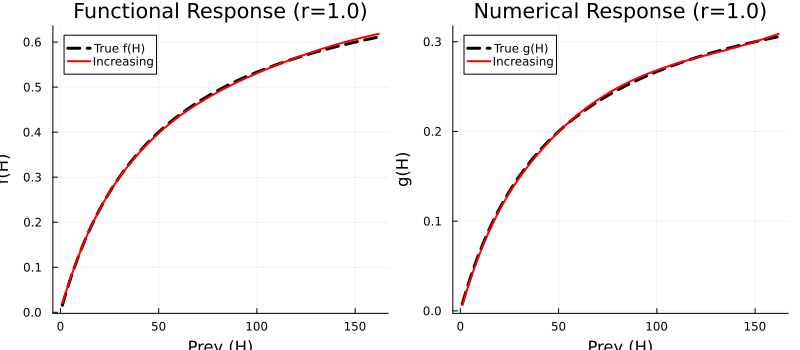
H_true_lv = [sol_lv_true(t)[1] for t in data_times_lv]
L_true_lv = [sol_lv_true(t)[2] for t in data_times_lv]
ph = plot(data_times_lv, H_true_lv, label="True", lw=2, color=:black, ls=:dash,
xlabel="Time", ylabel="Prey (H)", title="Prey Trajectory")
scatter!(ph, data_times_lv, H_obs, label="Data", ms=2, alpha=0.3, color=:gray)
plot!(ph, data_times_lv, sol_lv_sc.fitted_values[:, 1],
label="Increasing", lw=2, color=:red)
pl = plot(data_times_lv, L_true_lv, label="True", lw=2, color=:black, ls=:dash,
xlabel="Time", ylabel="Predator (L)", title="Predator Trajectory")
scatter!(pl, data_times_lv, L_obs, label="Data", ms=2, alpha=0.3, color=:gray)
plot!(pl, data_times_lv, sol_lv_sc.fitted_values[:, 2],
label="Increasing", lw=2, color=:red)
plot(ph, pl, layout=(1, 2), size=(800, 350))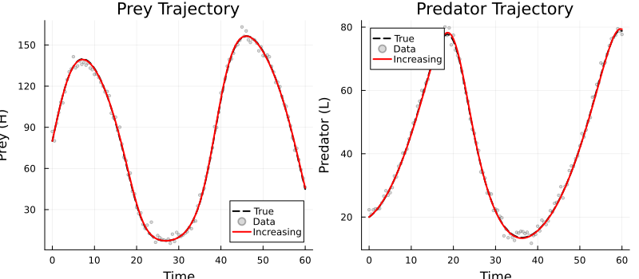
Lotka-Volterra (simulated): Shape-Constrained Recovery
------------------------------------------------------------
f(H) functional response: cor=1.0, EDF=9.6
g(H) numerical response: cor=1.0The :increasing constraint ensures that both the functional and numerical responses are monotonically increasing in prey density — a fundamental ecological property.
Example 6: Hudson Bay Hare–Lynx (Real Data)
We now apply shape-constrained PSM to the classic Hudson Bay Company hare–lynx pelting records (1845–1935). With real data, the true functional forms are unknown, so we use four unknown functions — all with ecologically motivated constraints:
\[\frac{dH}{dt} = r(H) \cdot H - f(H) \cdot L, \qquad \frac{dL}{dt} = g(H) \cdot L - d(L) \cdot L\]
- r(H): prey growth rate —
:decreasing(density-dependent limitation) - f(H): functional response —
:increasing(more prey = more predation) - g(H): numerical response —
:increasing(more prey = more predator growth) - d(L): predator death rate —
:positive(always positive)
For oscillatory systems like predator-prey cycles, the standard LAML solver (which linearizes the ODE-to-data mapping) struggles because small parameter changes can drastically shift oscillation phase and amplitude. We use CollocationLAML, which treats the state trajectories as free parameters and penalizes ODE violation, making it much more robust for cyclic dynamics.
Data
using DelimitedFiles
data_path = joinpath(@__DIR__, "..", "..", "data", "hare_lynx.csv")
raw = readdlm(data_path, ',', Any; header=true)
hl_data = Float64.(raw[1])
years = hl_data[:, 1]
hare_obs = hl_data[:, 2]
lynx_obs = hl_data[:, 3]
p_data = plot(years, hare_obs, label="Hare", lw=2, color=:forestgreen,
xlabel="Year", ylabel="Population index",
title="Hudson Bay Hare-Lynx Data (1845-1935)")
plot!(p_data, years, lynx_obs, label="Lynx", lw=2, color=:firebrick)
p_data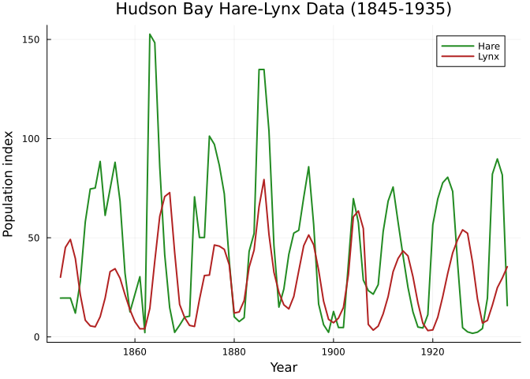
Fitting with CollocationLAML
function lv_hl!(du, u, p, t)
H, L = u
H_safe = max(H, 0.1)
L_safe = max(L, 0.1)
du[1] = p.r(H_safe) * H - p.f(H_safe) * L
du[2] = p.g(H_safe) * L - p.d(L_safe) * L
end
H_dom = (0.0, 180.0)
L_dom = (0.0, 90.0)
uf_r_hl = ShapeConstrainedBSplineApproximator(:r, H_dom, 10, :decreasing; initial=0.5)
uf_f_hl = ShapeConstrainedBSplineApproximator(:f, H_dom, 10, :increasing; initial=0.3)
uf_g_hl = ShapeConstrainedBSplineApproximator(:g, H_dom, 10, :increasing; initial=0.2)
uf_d_hl = ShapeConstrainedBSplineApproximator(:d, L_dom, 10, :positive; initial=0.3)
prob_hl = PSMProblem(
ODEProblem(lv_hl!, [hare_obs[1], lynx_obs[1]], (years[1], years[end])),
[uf_r_hl, uf_f_hl, uf_g_hl, uf_d_hl];
data_times=years, data_values=hcat(hare_obs, lynx_obs),
obs_to_state=[1, 2], solver=BS3(),
abstol=1e-6, reltol=1e-6)
sol_hl = solve(prob_hl, CollocationLAML(maxiters=100, verbose=false))
nothing┌ Warning: CollocationLAML: simulating the fitted dynamics gives a data loss 1.26e6× the reported `data_loss`. `fitted_values` are the estimated STATE, which need not lie near any trajectory the dynamics admit, so the reported loss understates the model's error by that factor. See `convergence.simulated_data_loss`.
└ @ PartiallySpecifiedModels ~/Projects/psm/PartiallySpecifiedModels.jl/src/collocation_solver.jl:1269Trajectory fit
ch_hl = round(cor(sol_hl.fitted_values[:, 1], hare_obs), digits=3)
cl_hl = round(cor(sol_hl.fitted_values[:, 2], lynx_obs), digits=3)
ph_hl = plot(years, hare_obs, label="Observed", lw=1, color=:forestgreen, alpha=0.5,
xlabel="Year", ylabel="Population", title="Hare (r=$ch_hl)")
scatter!(ph_hl, years, hare_obs, ms=2, color=:forestgreen, alpha=0.3, label="")
plot!(ph_hl, years, sol_hl.fitted_values[:, 1], label="Fitted", lw=2, color=:red)
pl_hl = plot(years, lynx_obs, label="Observed", lw=1, color=:firebrick, alpha=0.5,
xlabel="Year", ylabel="Population", title="Lynx (r=$cl_hl)")
scatter!(pl_hl, years, lynx_obs, ms=2, color=:firebrick, alpha=0.3, label="")
plot!(pl_hl, years, sol_hl.fitted_values[:, 2], label="Fitted", lw=2, color=:red)
plot(ph_hl, pl_hl, layout=(1, 2), size=(800, 350))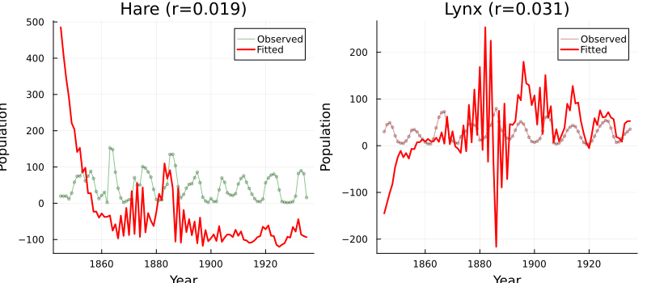
Recovered unknown functions
H_eval_hl = range(1.0, 160.0, length=200)
L_eval_hl = range(0.5, 80.0, length=200)
r_hl = [sol_hl.unknown_functions[:r](H) for H in H_eval_hl]
f_hl = [sol_hl.unknown_functions[:f](H) for H in H_eval_hl]
g_hl = [sol_hl.unknown_functions[:g](H) for H in H_eval_hl]
d_hl = [sol_hl.unknown_functions[:d](L) for L in L_eval_hl]
pr_hl = plot(H_eval_hl, r_hl, lw=2, color=:blue, label="r(H)",
xlabel="Hare (H)", ylabel="Rate", title="Prey Growth Rate")
hline!(pr_hl, [0.0], color=:gray, ls=:dot, alpha=0.5, label="")
pf_hl = plot(H_eval_hl, f_hl, lw=2, color=:red, label="f(H)",
xlabel="Hare (H)", ylabel="Rate", title="Functional Response")
pg_hl = plot(H_eval_hl, g_hl, lw=2, color=:orange, label="g(H)",
xlabel="Hare (H)", ylabel="Rate", title="Numerical Response")
pd_hl = plot(L_eval_hl, d_hl, lw=2, color=:purple, label="d(L)",
xlabel="Lynx (L)", ylabel="Rate", title="Predator Death Rate")
plot(pr_hl, pf_hl, pg_hl, pd_hl, layout=(2, 2), size=(800, 600))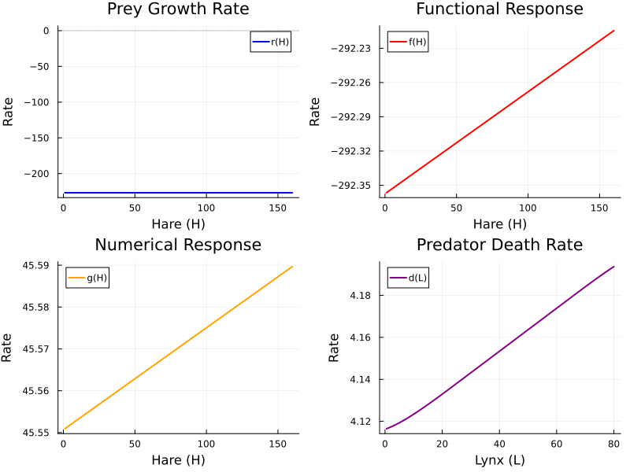
Hudson Bay Hare-Lynx: Shape-Constrained PSM Results
------------------------------------------------------------
Solver: CollocationLAML
Trajectory correlation:
Hare: r = 0.019
Lynx: r = 0.031
Data loss: 2.2458767e6
EDF: 3.0
Ecological interpretation:
r(H): decreasing -- density-dependent prey growth
f(H): increasing -- Type II-like functional response
g(H): increasing -- numerical response saturates
d(L): positive -- predator mortalityThe shape constraints enforce ecologically sensible functional forms on all four unknown functions, while the CollocationLAML solver handles the challenging oscillatory dynamics by treating states as free parameters.
Diagnostic Plots
A standard 4-panel diagnostic display assesses residual behaviour for the SIR decreasing-constraint fit. The QQ plot checks normality of standardized residuals, “Residuals vs Fitted” detects systematic patterns, the histogram visualises the residual distribution, and “Observed vs Fitted” checks overall calibration.
using PartiallySpecifiedModels: appraise
diag = appraise(sol_dec)
p_qq = scatter(diag.qq_theoretical, diag.qq_sample,
xlabel="Theoretical quantiles", ylabel="Sample quantiles",
title="QQ Plot of Residuals", ms=3, legend=false, color=:steelblue)
mn, mx = extrema(vcat(diag.qq_theoretical, diag.qq_sample))
plot!(p_qq, [mn, mx], [mn, mx], color=:red, ls=:dash, label="")
p_rf = scatter(diag.fitted, diag.residuals,
xlabel="Fitted values", ylabel="Residuals",
title="Residuals vs Fitted", ms=3, legend=false, color=:steelblue)
hline!(p_rf, [0], color=:gray, ls=:dot)
p_hist = histogram(diag.residuals, normalize=:pdf,
xlabel="Residuals", ylabel="Density",
title="Histogram of Residuals", legend=false, color=:steelblue, alpha=0.7)
p_of = scatter(diag.observed, diag.fitted,
xlabel="Observed", ylabel="Fitted",
title="Observed vs Fitted", ms=3, legend=false, color=:steelblue)
mn2, mx2 = extrema(vcat(diag.observed, diag.fitted))
plot!(p_of, [mn2, mx2], [mn2, mx2], color=:red, ls=:dash, label="")
plot(p_qq, p_rf, p_hist, p_of, layout=(2, 2), size=(700, 600))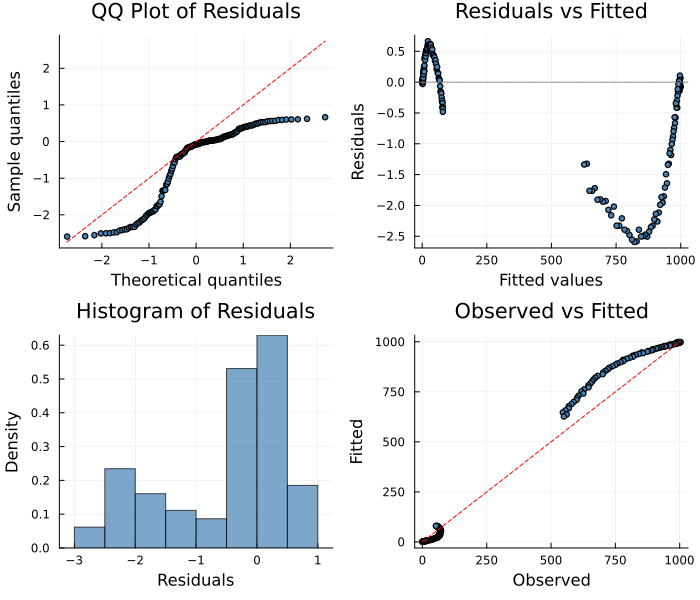
Durbin-Watson: 0.006, 0.02[!TIP]
See Also
- Vignette 16: COMONet — neural network approximators with formally verified shape constraints
- Vignette 26: SPDE — SPDE approximators with shape constraints
Summary
| Example | Method | Correlation | EDF |
|---|---|---|---|
| SIR β(I) | Unconstrained | 1.0 | 2.6 |
| Decreasing | 0.675 | 2.2 | |
| Dec+Positive | 0.997 | 3.5 | |
| Logistic r(N) | Unconstrained | 1.0 | 2.0 |
| Decreasing | 1.0 | 2.0 | |
| Dec+Zero@K | 1.0 | 1.0 | |
| Holling Type II f(R) | Unconstrained | 0.978 | 4.1 |
| Inc+Concave | 0.914 | 2.0 | |
| Inc+Zero@0 | 0.996 | 3.4 | |
| Ricker f(N) | Unconstrained | 1.0 | 2.0 |
| Decreasing | 1.0 | 2.0 | |
| Dec+Zero@K | 1.0 | 1.0 | |
| L-V f(H) (simulated) | Increasing | 1.0 | 9.6 |
| Hare-Lynx (real data) | Constrained 4UF (CollocationLAML) | H:0.019 / L:0.031 | 3.0 |
When to Use Shape Constraints
| Ecological Context | Unknown Function | Recommended Constraint |
|---|---|---|
| Density-dependent transmission | β(I) — transmission rate | :decreasing or :dec_positive |
| Logistic growth | r(N) — per-capita growth rate | :dec_zero_right |
| Functional response (Type II) | f(H) — predation rate per predator | :inc_concave or :inc_zero_left |
| Numerical response | g(H) — predator growth from prey | :inc_concave |
| Stock-recruitment | f(N) — recruitment | :inc_concave |
| Ricker/Beverton-Holt growth | f(N) — growth exponent | :dec_zero_right |
| Density-dependent growth | r(N) — prey per-capita growth | :decreasing |
| Mortality/death rates | μ(x) or δ(L) | :positive |
| Monod kinetics | μ(S) — microbial growth rate | :inc_concave |
Key benefits of shape constraints:
- Better boundary behavior — Unconstrained splines often misbehave at domain boundaries where data are sparse. Constraints prevent unphysical extrapolation.
- Lower EDF — Constraints reduce effective complexity, providing built-in regularization that complements the smoothing penalty.
- Biological interpretability — The recovered function respects known ecological mechanisms (e.g., saturation, density dependence, equilibrium conditions).
- Robustness to noise — Constraints prevent the optimizer from fitting noise at the expense of realistic function shape.
Available Constraints
The full set of shape constraints:
| Constraint | Shape | f at endpoints | nparams |
|---|---|---|---|
:increasing | f’(x) ≥ 0 | free | q |
:decreasing | f’(x) ≤ 0 | free | q |
:convex | f’’(x) ≥ 0 | free | q |
:concave | f’’(x) ≤ 0 | free | q |
:inc_convex | increasing + convex | free | q |
:inc_concave | increasing + concave | free | q |
:dec_convex | decreasing + convex | free | q |
:dec_concave | decreasing + concave | free | q |
:positive | f(x) ≥ 0 | free | q |
:dec_positive | decreasing + positive | free | q |
:inc_zero_left | increasing, f(x_min) = 0 | pinned left | q − 1 |
:dec_zero_right | decreasing, f(x_max) = 0 | pinned right | q − 1 |
:inc_zero_right | increasing, f(x_max) = 0 | pinned right | q − 1 |
:dec_zero_left | decreasing, f(x_min) = 0 | pinned left | q − 1 |
References
- Pya, N. & Wood, S.N. (2015). Shape constrained additive models. Statistics and Computing, 25, 543–559.
- Wood, S.N., Pya, N. & Säfken, B. (2016). Smoothing parameter and model selection for general smooth models. JASA, 111, 1548–1575.